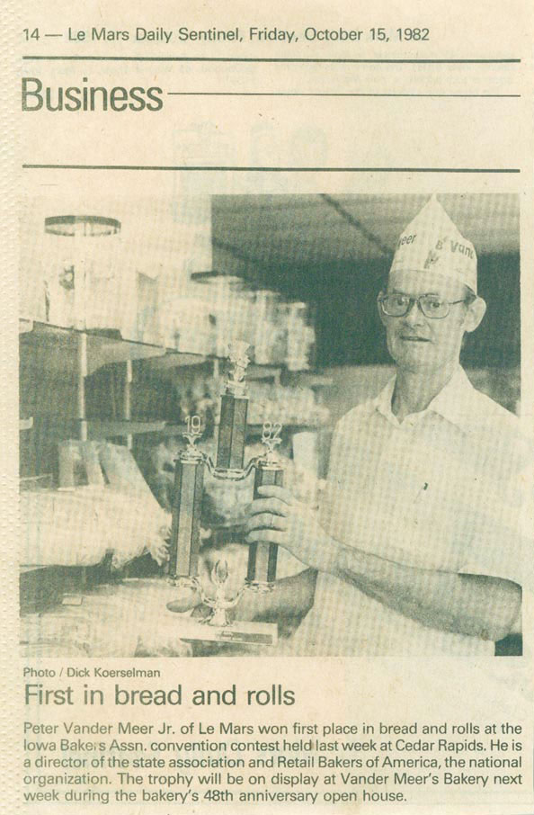

Trophy for Bread and Rolls

Pete in the LeMars Daily Sentinel, October 1982
Fri, April 7th 2006, 1:22 PM PDT
Skip Fisch
Pete has been my lifelong friend. We have known each other since we were 3 or 4. The amazing thing is that I look at this picture and he looks almost as young now as he did in 1982. I am so jealous...